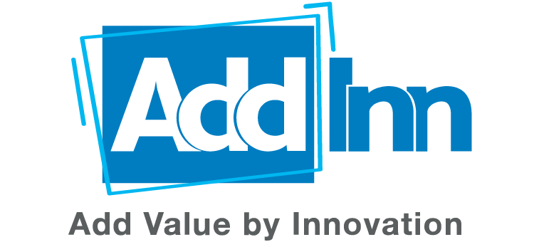

<body style="margin-left: -4rem;">

<br>
<div class="flex" style=" margin-left: 15rem;">
    <button
      class="font-bold w-64 py-2 flex-shrink-0 text-blue-600 bg-white border-blue-500 border-2 text-blue-600  px-4 focus:outline-none hover:bg-blue-600 rounded text-lg  sm:mt-0"
      style="margin-left:120px" routerLink="/register" routerLinkActive="active">Inscription
      
    </button>
    <button
      class="font-bold w-64 py-2 flex-shrink-0 text-white bg-blue-500 border-1  px-4 focus:outline-none hover:bg-blue-600 rounded text-lg  sm:mt-0"
      style="margin-left:220px" routerLink="/login" routerLinkActive="active">Connexion
     
    </button>
</div>
</body>